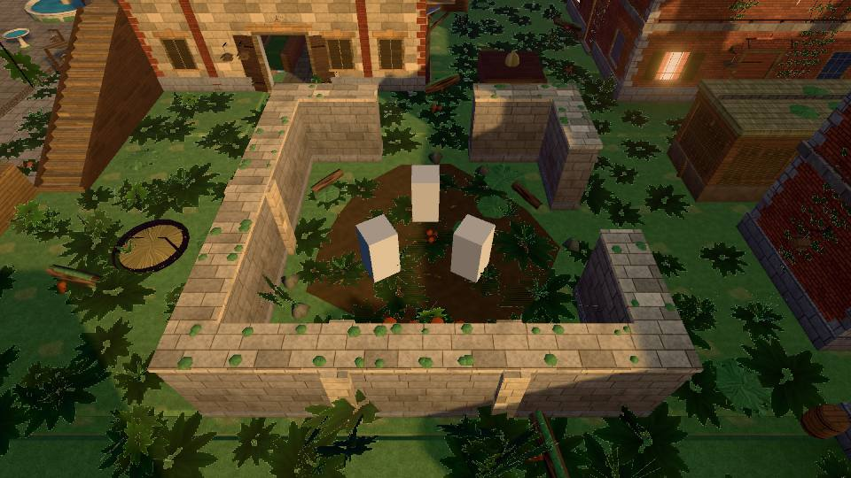
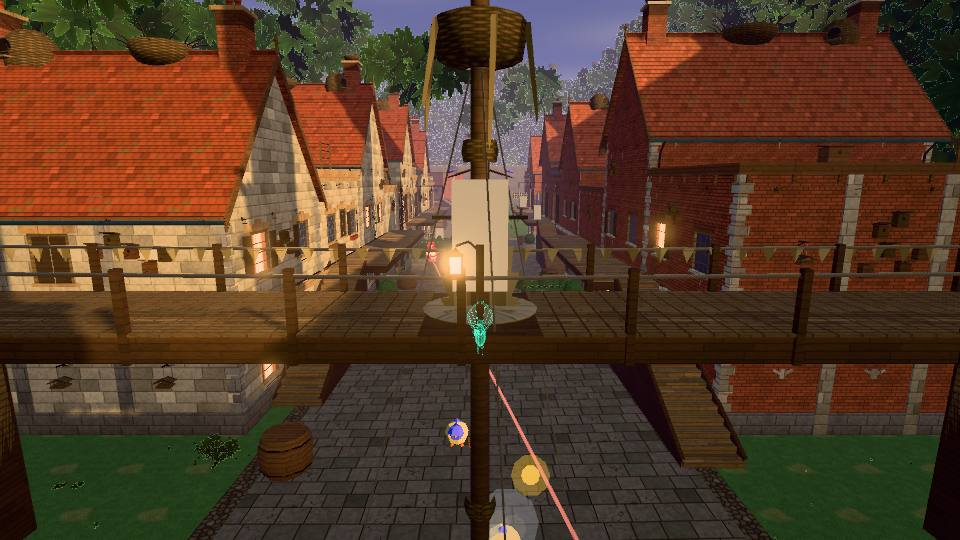
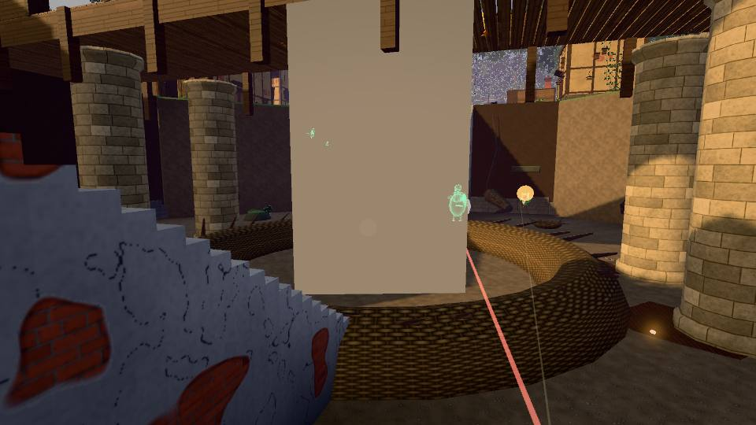

Objectives and the jungle
Between the lanes lies the jungle: camps of creatures, things to break, and prizes that come on a timer. None of them ends the match, but all of them pay Seeds or strength, and the bots go for them too (see Bots). Most of them are claimed by melee: a tap of the melee key is a light hit and holding it is a heavy hit. There is no Interact key.
| Feature | Count |
|---|---|
| Thicket camps | 24 |
| Nests | 100 |
| Bell Feeders | 8 |
| Berry bushes | 22 |
| Lookouts | 14 |
| Hides | 8 |
| Bough Springs | 8 |
| Feather rune bridges | 2 |
| Egg Perches | 2 |
Thickets
A Thicket is a camp of neutral creatures that guards a patch of jungle. Every camp sleeps until a hero comes close, and then the whole camp wakes and fights back. Kill every creature for Seeds; the camp comes back after a delay. Camps are in three tiers, by how tough they are.
| Camp | Tier | Camps | Creatures | First appears | Returns after a clear | Resists (Talon / Song) |
|---|---|---|---|---|---|---|
| Beetles | 1 | 8 | 3 × Beetle | 2:00 | 1:30 | 30% / 25% |
| Weasels | 2 | 4 | 3 × Weasel | 5:00 | 4:45 | 30% / 25% |
| Rats | 2 | 4 | 5 × Rat | 5:00 | 4:45 | 30% / 25% |
| Toads | 2 | 4 | 2 × Toad | 5:00 | 4:45 | 30% / 25% |
| Badger and cubs | 3 | 4 | 1 × Badger, 2 × Badger cub | 8:00 | 5:30 | 40% / 35% |
| Creature | Health | Damage per hit | Seeds at the start | Special |
|---|---|---|---|---|
| Beetle | 200 | 12 Talon | 45 | |
| Weasel | 480 | 22 Talon | 100 | every 6 s a 6 m lunge for 40 Talon |
| Rat | 220 | 10 Talon | 60 | each bite cuts the victim's healing by 20% for 2 s |
| Toad | 720 | 30 Song | 150 | every 8 s spits a 3 m puddle for 4 s: 20 damage a second and 30% slow |
| Badger | 2,000 | 50 Talon | 560 | every 6 s a slam (0.6 s warning, 6 m, 110 damage) |
| Badger cub | 420 | 20 Talon | 120 |
| Rule | Value |
|---|---|
| A camp wakes when a hero comes within | 30 m |
| While asleep, damage from further than | 35 m does nothing |
| Creatures chase no further than | 18 m from home (plus 3 m while they can see you) |
| A camp walks home and heals after | 6 s without damage, or when dragged past the leash |
| Each creature attacks | whoever did the camp the most damage in the last 3 s |
| Growth per minute of match time | health +2%, damage +0.5%, Seeds +1.5% (fixed when the camp spawns) |
| Seeds are shared with allies who hit it in the last | 5 s |

Fledglings and creatures ignore each other: a camp only fights heroes.
Nests
Nests are small breakable things scattered through streets, rooms, cellars and the Hollow. They are quick Seeds and small boosts on the way to somewhere else.
| Nest | On the map | Breaks to | Drops |
|---|---|---|---|
| Twig Nest | 72 | any hit, or a hero running through at 8.5 m/s or more | a Seed sprig 60% of the time (24 Seeds plus 1.8 a minute); a crumb 15% of the time |
| Woven Nest | 16 | one heavy melee hit (it is solid) | always a Seed sprig (48 Seeds plus 3.6 a minute); a crumb 25% of the time |
| Keepsake Nest | 12 | any hit, or a hero running through | a keepsake 50% of the time |
| Rule | Value |
|---|---|
| First appear | on the surface 3:00, below ground 5:00, in the Hollow 10:00 |
| Return after being broken | 3:00 on the surface, 5:00 below ground |
| Seed sprig lasts | 60 s |
A crumb is a short boost from a broken Nest. You can hold one at a time, and a new one replaces the old.
| Crumb | Effect for 60 s |
|---|---|
| Quick crumb | +0.15 shots a second |
| Light crumb | +1 move speed (m/s) |
| Sweet crumb | +15 Song power |
A keepsake is a permanent boost, picked by chance from a list. You keep it when you die. Keepsakes also come from the Golden Egg, the Roc and Bell Feeders, and their strength depends on how long the match has run.
| Keepsake | Before 10:00 | 10:00 to 29:59 | From 30:00 |
|---|---|---|---|
| gun damage | +0.03 | +0.04 | +0.05 |
| shots a second | +0.01 | +0.02 | +0.03 |
| magazine size | +4% | +6% | +8% |
| maximum health | +15 | +25 | +35 |
| Song power | +2 | +3 | +4 |
| Talon resist | +0.75% | +1% | +1.5% |
| Song resist | +0.75% | +1% | +1.5% |
| ability cooldown reduction | +0.5% | +0.75% | +1% |
| move speed (m/s) | +0.1 | +0.15 | +0.2 |
| stamina recharge speed | +2% | +3% | +4% |
Feather runes
At 5:00 and every 5:00 after, a rune appears on each of the two rune bridges (one on the west side of the map, one on the east). Each time, two different kinds are on offer. Claim one with a heavy melee hit.
| Feather | Strength at 5:00 | Strength at 40:00 |
|---|---|---|
| Swift feather | +1.5 sprint speed (m/s); +1 stamina pips; +25% stamina recharge speed | +3 sprint speed (m/s); +2 stamina pips; +60% stamina recharge speed |
| Fierce feather | +0.12 shots a second; +30% magazine size | +0.3 shots a second; +60% magazine size |
| Sage feather | +15 Song power; +10% ability cooldown reduction | +60 Song power; +20% ability cooldown reduction |
| Stout feather | +200 maximum health; +5 health regeneration (HP/s) | +700 maximum health; +35 health regeneration (HP/s) |
| Rule | Value |
|---|---|
| First appear / every | 5:00 / 5:00 |
| Lasts | 150 s after you claim it, or until you die |
| Strength | set when you claim it, rising steadily from 5:00 to 40:00 |
| Claim with | a heavy melee hit |

The Golden Egg
From 10:00 an Egg is lowered onto one of the two Egg Perches on the map's centre line, one west and one east. The other perch is the Hatching Stone. Whichever flock carries the Egg to the Stone hatches it into golden Seed pods and keepsakes. Hit the Egg with melee to pick it up, and carry it to the other perch. Delivery is automatic. While you carry it you cannot shoot or cast, and the enemy can see you, so bring friends.
| Rule | Value |
|---|---|
| First Egg / every | 10:00 / 5:00, on the perch that did not hold the last one |
| Lowered over | 10 s before it can be taken |
| Pick it up | with a light or heavy melee hit once it has landed |
| Carrier | cannot fire, cast, use items, parry, mantle or ride; revealed to the enemy; +1.5 m/s and +1 stamina pip |
| Dropped when | the carrier dies, is stunned or displaced, or is hit by an enemy's melee; the carrier's own melee sets it down |
| Nobody can take it for | 1 s after a drop |
| Left alone for | 180 s it rolls towards its Hatching Stone at 2 m/s |
| After the first pickup | 45 s later it starts to cool, and 45 s after that it cracks and is lost |
| Delivery | carry it into the 3 m circle at the other perch: automatic |
| Value | 400 Seeds plus 70 a minute, ×1.25 for a flock behind in net worth; it hatches into 6 golden pods |
| The courier gets | 3 keepsakes; each other hero within 30 m of the Stone gets 1 |
| A flock behind in net worth | carries with +2% resists and +0.2 m/s sprint per 1% behind, up to 15% |
The Roc
The Roc is a giant bird that sleeps in the Hollow, the pit under the Old Mill Bridge in the middle of the map. It wakes at 20:00. Only a bird standing down in the Hollow can hurt it, and only those birds draw its attention, so a fight with the Roc is a fight in a pit.

| Roc | Value |
|---|---|
| Wakes at | 20:00 |
| Health | 24,000, plus 300 for every minute it has lived; regenerates 15 a second |
| Resists | 15% Talon |
| Who can hurt it | only a bird down in the Hollow |
| Rake | every 2.5 s at its target: 8 m cone, 140 Talon |
| Gale Flap | every 10 s: 15 m, 80 Song, 10 m knockback |
| Enrage | below 25% health: a roar across the map, +30% attack speed, and every 8 s a 20 m shriek that silences for 1.5 s |
| Resets | heals to full if nobody is in the Hollow for 8 s |
| Returns after a kill | 7:00, then 6:00, then 5:00 (then 5:00 each time) |
| Reward | every hero of the killing flock gets 300 Seeds plus 5 a minute, and 2 keepsakes |
Phoenix Embers and Rekindle
When the Roc falls, three Phoenix Embers drop in the Hollow. Either flock can claim one with a heavy melee hit.
| Phoenix Embers | Value |
|---|---|
| When the Roc dies | 3 Embers fall over 6 s and burn for 60 s |
| Claim with | a heavy melee hit, by either flock |
| Claimer gets | a full heal and 200 Seeds plus 5 a minute |
| Rekindle | the claimer's flock gains a charge (at most 3 per kill) lasting 180 s from the first claim; a charge revives a fallen hero where it fell, once per hero |
| Siege flight | while a flock holds Rekindle its new fledglings have +40% health and deal +30% to structures |
Bell Feeders
A Bell Feeder is a large bell-shaped bird feeder that you break for Seeds. There is one near the top of each Bell Tower and one upstairs in each Granary, where a Granary's Rats guard it. A Granary Feeder and its Rat camp come back together, once both are down.
| Bell Feeder | Value |
|---|---|
| On the map | 8, at the top of each Bell Tower and inside each Granary |
| Appears | 8:00, and 5:00 after a break |
| Health | 480 |
| Hits | light 60, heavy 120; each melee hit swings back for 70 Song unless the bell is chiming |
| The chime | from 180 health its lamp blinks on a rhythm; a hit while it is lit gives keepsakes (1 light, 3 heavy) |
| Seeds | 300 plus 3 a minute at the first hit; a light hit pays 1/16 of it, a heavy hit 1/8 and the break 1/2, shared with allies who hit it within 5 s |
Berries, Hides, Lookouts and Springs
Small things that help you move or recover. None of them needs a key: you walk into them.
| Feature | On the map | What it does |
|---|---|---|
| Berry bush | 22 | walk into it: heals 15% of your health over 4 s. First ripe at 2:30, back after 3:00 |
| Hide | 8 | a small bird hide: inside it enemies outside cannot see or target you, you regenerate 3 HP a second plus 0.3% of your health, and your stamina recovers faster. It shows you 2 s after you act against anyone |
| Lookout | 14 | stand within 3 m and your flock sees out to 60 m from you |
| Bough Spring | 8 | walk onto the pad to be flung up and across to its landing |